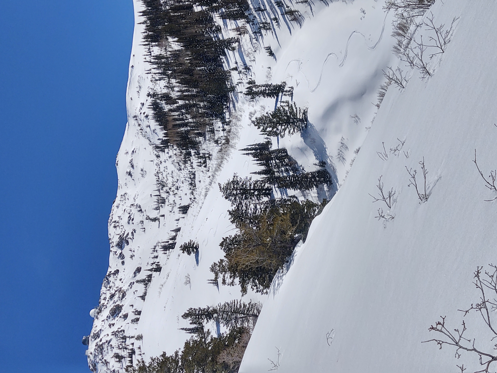
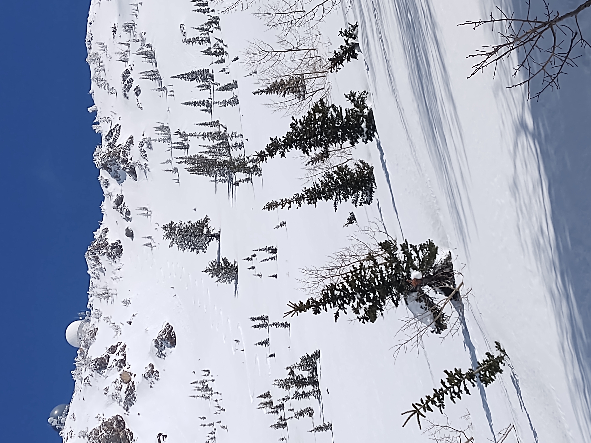

Francis Peak, though marred with radar tower crap used by the FAA and Hill Air-Force Base, has some good skiing. Be warned, however, to stay away from the peak. Not only is it private property, but you don't want to expose yourself to the high-frequency radio wave radiation. I'm ashamed to admit that, through ignorance and stupidity, I hurt myself on this peak.
In May of '23, having skied into the bowl east of the peak, and while getting ready to skin again, I saw a line coming off the peak, and decided to go for it. The snowpack was so high that year that when I stood on the peak (next to the two big bulbs or "shalt & pepper shakers", as they're sometimes called), I was face-to-face with some sort of cell transmitter. My ears were a buzz and I knew it wasn't healthy to be there. I should never have been there at all, but being there, I should have fled immediately. Instead, I decided to transition as quickly as possible. I ripped my skins, locked my boots and bindings, and sailed off as soon as I could, but by then, it was too late. The time I'd spent there on the peak was all it took to give me perminant high-frequency hearing loss.
I have normal hearing in the normal range, but some of the hairs in my cochlea were damaged while on the peak. One of the unfortunate consequences of this is that your brain misses the input from those hairs, even if you don't, and the result is tinnitus--a constant high pitched sound, not produced by your external environment, but by your damaged hearing system. Your hearing system has basically two parts to it: the brain and the periphery. Damage to the peripheral component causes the brain to sometimes mal-adapt to a new lack of input by creating a phantom noise. For some, it goes way eventually. For others, such as myself, it's perminant.
You can get tinnitus in many ways, but it was interesting to me to find out how scientists give tinnitus to guinea pigs in order to do tinnitus research. What they do is expose them to blasts of high frequency noise. That's just what I did to myself on this infernal peak!
I will never visit this peak again, not just for fear of further damage to my hearing, but also because I think it would just be too emotionally hard to bear. I was suicidal for the first few weeks of tinnitus, and it has taken me a very long time to adapt to a life of ringing ears. All the same, if you do visit this peak, you will probably be just fine if you stick to the shoulders of the mountain far-enough away from the peak, or the bowl just east of it (which, I might add, is often overrun by infernal snowmobilers.)
In my defense, I became a bit desensatized to cell tower transmitters, because so many hikes, even trail-heads, come very close to them. I learned to think of them as mostly benign, but I was wrong.

Anyhow, I've skied this peak twice in the Spring time and approached via the Wolverine trail near Fruit Heights. It's a steep booter until you can hope the snow is reasonably consistent to start skinning. The skin along the upper reaches of the ridge is beautiful, and the peak is beautiful too, especially if you imagine it without those infernal radar towers. (I think my late, step-grandpa helped chop off the peak when it was being constructed, if memory serves.)
On approach, the snow might be very hard, but you have to have faith that the rising sun will have soften the snow on the east side of the peak once you reach the south shoulder and cross over. There is good skiing in the bowl east of the peak, and I believe Owen Reeder calls it "the ball room."
Once the sun is able to soften the snow on the west side of the peak, ski off the south-shoulder down into the head of Baer Canyon (sometimes spelt "Baer" or "Bair".) This is a neat line, and the run just goes and goes for several hundred feet.
I've exited by going back down the ridge, or by finding the Baer Canyon trail and following that to the BST, then walking the BST back to where I started. It's probably best to just go back down Wolverine Ridge. Note that one Spring I made the mistake of skiing underneath the north ridge of Baer Canyon, the south-facing slopes looming above me, and the heat of the day very intense. I'm lucky I wasn't taken out by a wetslide, especially since many terrain traps abounded.
I've also skied the head of Baer Canyon, approaching from Tanner's Peak, just above Tanner's Flat. This is not a bad way to approach the bowls of Baer Canyon, and you can ski all the way back to the flat.
The cactus flower was found on the Wolverine Trail that heads up to Francis Peak.